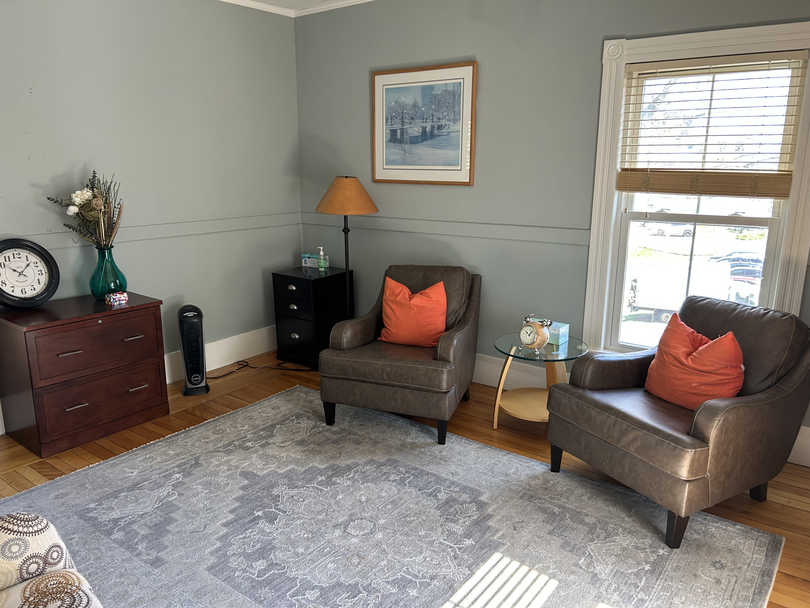

Individual Therapy
One-to-one support for adults and elders, shaped around your concerns, strengths, and goals.
Ask about individual therapyServices
Stephanie provides individual therapy and couples counseling for adults and elders, with care that is collaborative, practical, and attentive to each client’s goals.
Areas of support
One-to-one support for adults and elders, shaped around your concerns, strengths, and goals.
Ask about individual therapyA collaborative setting to explore communication, recurring patterns, conflict, and connection.
Ask about couples counselingThoughtful support for anxiety, depression, stress, self-esteem concerns, and their impact on daily life.
Start a conversationSpace to work through family conflict, divorce, parenting, infidelity, and relationship concerns.
Start a conversationGrounded care through loss, career questions, changing roles, and other meaningful transitions.
Start a conversationSupport for mood disorders, trauma and PTSD, chronic illness, chronic pain, and emotional wellbeing.
Start a conversationWorking together
Stephanie draws from Cognitive Behavioral Therapy, mindfulness-based work, emotionally focused therapy, and strength-based therapy. The aim is a process that offers both room for self-awareness and practical ways to move forward.

Insurance
Coverage and benefits vary. Please confirm your current plan and eligibility directly when you inquire.
Out-of-network arrangements are also listed. Ask Stephanie about current coverage and fees.
Common questions
Yes. Stephanie is available for both in-person and online sessions.
Yes. Stephanie provides both individual therapy and couples counseling.
Stephanie works with adults and elders, including adults age 65 and older.
Call or send a general inquiry to discuss what you’re looking for and any questions you have about getting started.
Next step
A brief conversation can help you learn more about the practice and decide what comes next.